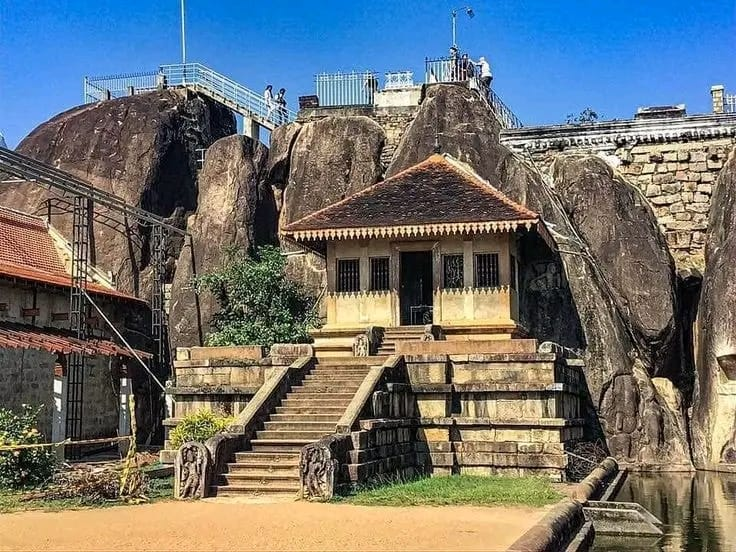
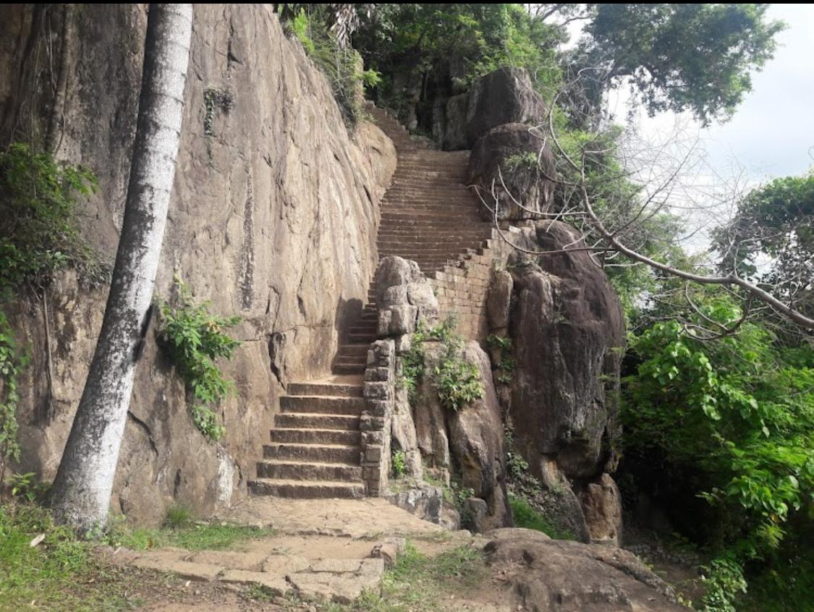
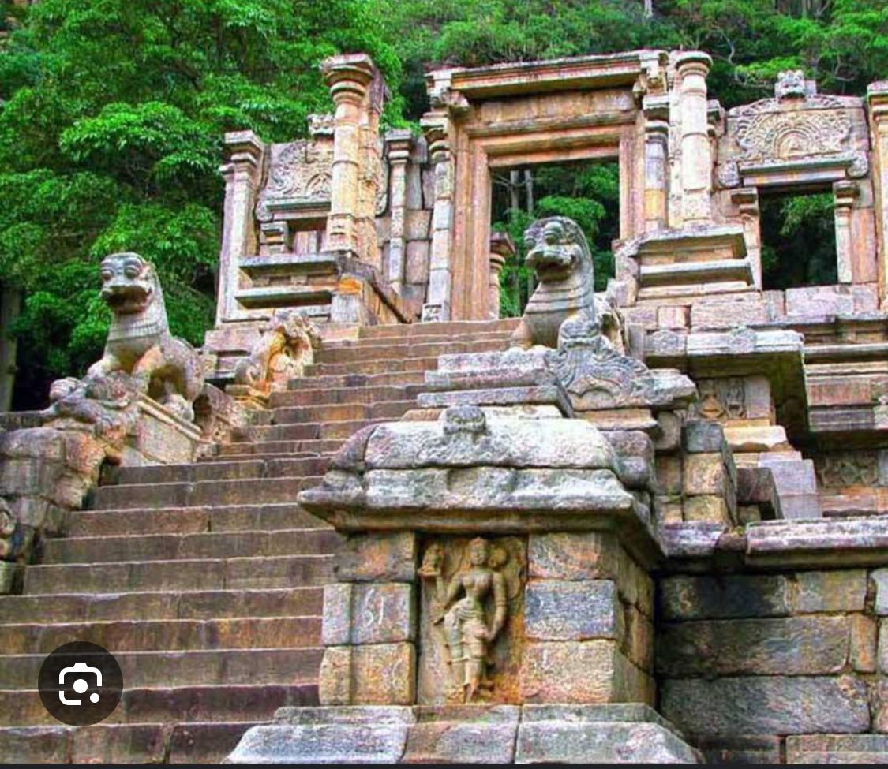
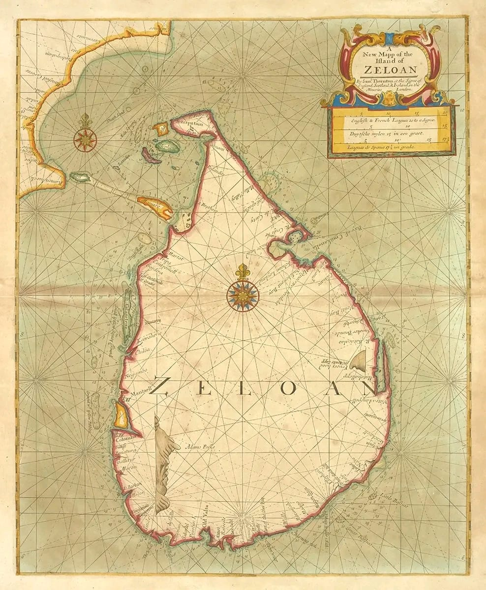
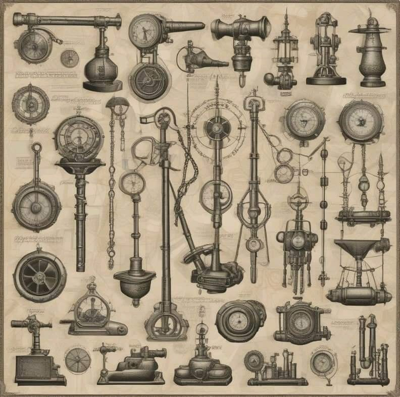
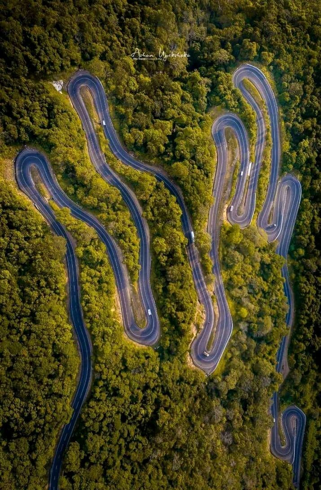

 Surveying in Sri Lanka has a rich history that dates back to the era of ancient kingdoms such as Anuradhapura, Polonnaruwa, and beyond. Even without modern equipment, early Sri Lankan civilizations demonstrated remarkable engineering and land management skills. They used basic tools, natural observation, and mathematical knowledge to measure land for agriculture, irrigation, religious constructions, and urban planning. Massive reservoirs (wewas), canal systems, and temple alignments prove the existence of early surveying principles. These practices reflect the advanced knowledge possessed by ancient rulers and engineers, laying the foundation for the island’s long tradition of land administration and infrastructural development. The evolution of surveying from these ancient roots into a modern science highlights its timeless importance in Sri Lanka’s development.
| |
|
|
|---|---|---|
| Irrigation System Development | Designing tanks (wewas), canals (elas), and sluices. | Surveying was used to identify slopes and elevations to ensure proper water flow. For example, in Yoda Ela, accurate gradients were necessary to move water over long distances without modern instruments. |
| Land Allocation and Agriculture | Dividing land for cultivation and taxation | Officials measured plots for paddy fields and ensured fair distribution. They likely used ropes, measuring rods, and reference trees or rocks for boundaries. |
| Religious and Royal Architecture | lanning temples, stupas, monasteries, and palaces | Structures like Ruwanwelisaya and Jetavanaramaya required circular bases and symmetry. This needed geometric knowledge and layout techniques, involving basic angular and linear measurements. |
| Road and City Planning | Laying out roads, city walls, and drainage | Cities like Anuradhapura had grid-like road systems. Surveying ensured alignment and connectivity between royal, religious, and residential areas. |
| Boundary Definition | Marking kingdom borders and village limits | Natural landmarks and stone pillars were used for boundary surveying to avoid disputes and manage territories. |
Ancient Sri Lankan surveyors demonstrated remarkable precision using simple tools, observation, and practical geometry — making surveying a foundation of early civil engineering.
The Anuradhapura Kingdom (377 BC – 1017 AD), surveying was a vital part of planning and development. Although they didn’t have modern instruments like theodolites or GPS, they used simple tools and observation techniques for measurement and construction. ng played a crucial role in city planning, religious constructions, and irrigation systems. Though they didn’t use modern equipment, ancient engineers used practical methods like visual observation, measuring ropes, plumb lines, and water levels.
Examples of Surveying in the Anuradhapura Kingdom:
Yoda Ela (also called the Giant Canal) is an ancient irrigation canal built during the Anuradhapura Kingdom, around 5th century AD, to transport water from Kala Wewa reservoir to Tissa Wewa tank over a distance of nearly 87 km.
The canal had to maintain a very gentle and constant slope (about 10 cm per km) so water would flow smoothly by gravity without stagnating or flooding.
Ancient engineers used simple leveling techniques, possibly using water levels or sighting methods with staffs and strings, to measure elevation differences along the route.
They likely set reference points (benchmarks) to maintain consistent height differences over long distances.
The canal route needed to be aligned accurately between the source (Kala Wewa) and the target tank (Tissa Wewa).
They probably used line-of-sight methods, sighting along poles or natural landmarks to keep a straight or curved path as required.
Basic geometry and angular measurements helped in plotting the path.
To measure the long distance of the canal, they might have used measuring ropes or chains (similar to modern chains or tapes) to mark distances.
Repeated measurement units ensured accuracy over large distances.
Surveyors used existing natural features like hills, trees, or rock outcrops as fixed points for orientation and reference during construction.
Ruwanweliseya (also known as the Great Stupa) in Anuradhapura is one of the most sacred and majestic Buddhist monuments in Sri Lanka. Its construction during King Dutugemunu’s reign (2nd century BC) involved advanced surveying techniques for the time.
Ancient surveyors had to select a flat, geologically stable area to support the massive weight of the stupa.
They likely used basic alignment techniques with poles and sighting tools to establish a true center point, ensuring the structure was symmetrical and circular.
A central point was marked first.
Using rope methods, they drew perfect circles around this point to lay out the dome’s base.
These circles ensured radial symmetry, critical for balance and aesthetics.
As the stupa rose, the builders needed to maintain vertical alignment.
Simple tools like plumb bobs and weighted lines were likely used to keep layers aligned directly above the center.
Each level of stone and brick had to be horizontal.
Water levels or spirit-level-like devices may have helped ensure accuracy.
Misalignment would cause instability in the dome structure.
They likely used graded rods and manual triangulation to maintain correct height ratios between the dome, spire (kotha), and other features.
During the Polonnaruwa Kingdom (11th–13th century AD), surveying played a vital role in urban planning, irrigation construction, and religious monuments. The kingdom is well known for its advanced hydraulic civilization and architectural achievements, which would not have been possible without organized surveying methods.
Examples of Surveying in the Polonnaruwa Kingdom:
King Parakramabahu I built Parakrama Samudra, a massive reservoir, demonstrating advanced surveying and engineering for the time.
Used to study the landform and select the optimal site for the reservoir.
Elevation differences were calculated manually with tools like measuring rods, water levels, and sighting devices.
Natural slopes were studied to guide the water flow. Surveyors had to ensure that water could reach fields through gravity.
Long embankments and canals were constructed using line-of-sight alignment with wooden posts and ropes.
This ensured straight, level canal paths.
Smaller tanks and canals were connected precisely.
Gradient control was essential, achieved through primitive leveling methods.
Surveying was used for layout of temples like Gal Viharaya, ensuring symmetry and orientation with celestial references.
| Example | Surveying Use | Methods |
|---|---|---|
| Dambadeniya Kingdom (13th Century) | ||
| Construction of the Dambadeniya royal citadel.  | ite selection on a rocky hill for defense and visibility; alignment of palace structures and irrigation for the surrounding paddy fields. | Basic land leveling and use of observation points for visibility planning. |
| Yapahuwa Kingdom (1272–1284) | ||
| Yapahuwa rock fortress and stairway complex.  | Layout of the fortified city around a granite rock with steps, walls, and shrines built to scale. | Gradient surveying for steps and defensive walls; elevation-based planning. |
| Kurunegala Kingdom (late 13th – early 14th Century) | ||
| Construction of tanks like Kurunegala Wewa. | Water storage and distribution planning, including embankment design. | - Contour following, slope management, and capacity measurement. |
| Kotte Kingdom (15th Century) | ||
| Moat and rampart system around the Kotte fortress. | Accurate planning for defensive waterways and city walls. | Linear measurement and water flow assessment. |
| Kandy Kingdom (1469–1815) | ||
| Kandy Lake and Sri Dalada Maligawa area. | Site selection, lake construction with controlled depth and shape. | Land leveling, measurement tools (ropes, wooden rods), and traditional leveling techniques. |
During ancient Sri Lankan kingdoms, surveying played a crucial role in planning and constructing infrastructure such as tanks, canals, temples, cities, and fortresses. Despite the lack of modern equipment, ancient engineers used traditional tools and methods based on geometry, observation, and experience. From Anuradhapura to Kandy, each kingdom showcased advanced knowledge of land measurement, alignment, and water control — making ancient Sri Lankan surveying a foundation for sustainable development and engineering heritage.
Surveying in Sri Lanka saw a significant transformation during the colonial period, particularly under British rule. While traditional methods of land measurement existed during the kingdom eras, colonial powers introduced systematic, scientific surveying techniques. The British, in particular, established institutions, brought modern equipment, and introduced cadastral and topographical mapping for administration, taxation, and development. This period marked the beginning of standardized surveying practices in the country, laying the foundation for today’s land management, mapping, and infrastructure planning systems.

some examples of surveying during the colonial period in Sri Lanka:
Example: The Crown Lands Ordinance in the 1800s led to detailed land parcel mapping.
It began systematic topographical and cadastral surveys using chains, theodolites, and plane tables.
| Positions in the Survey Department | |
|---|---|
| Positions | |
| Surveyor General | Head of the department. Responsible for overall leadership and decision-making. |
| Deputy Surveyor General | Assists the Surveyor General and oversees major divisions like mapping, administration, and geodetic surveys. |
| Assistant Surveyor General | Heads specialized branches such as cadastral surveys, remote sensing, and GIS. |
| Senior Superintendent of Surveys (SSS) | Supervises survey operations in districts or regions. |
| Superintendent of Surveys (SS) | Leads teams of field surveyors; ensures quality control of survey work. |
| Surveyor/Technical Officer | Conducts ground surveys, prepares maps, and handles instruments. |
| Draftsmen & GIS Analysts | Prepare final maps, handle spatial data, and support digital mapping systems. |
During the colonial period in Sri Lanka, especially under British rule, surveying evolved from traditional practices to more systematic and scientific methods. The main objective of surveying during this time was to support land administration, taxation, infrastructure development (like roads, railways, and irrigation), and military planning. Colonial administrators introduced new instruments and techniques such as theodolites, chains, compasses, and plane tables, which significantly improved accuracy and efficiency. These methods laid the foundation for modern surveying practices and led to the establishment of organized mapping and land record systems across the island.

Used to measure short distances and plot boundaries.
Instruments: Gunter’s chain, ranging rods, arrows.
Commonly used for land partition and small-scale mapping.
Used to determine directions of survey lines using a compass.
Helped in creating rough maps quickly.
Often combined with chain surveying.
A method where field observations and plotting were done simultaneously.
Used in topographic mapping.
Simple and efficient for early mapmaking.
Introduced by the British to measure horizontal and vertical angles.
More precise, useful in triangulation networks.
Widely used for large-scale topographical and cadastral surveys.
The backbone of mapping during the British period.
A network of triangles was created across the island for accurate control points.
Provided the framework for all other mapping activities
Used to determine elevation differences.
Essential for irrigation, drainage, and railway projects.
Instruments: Dumpy levels, leveling staffs.
Began in the early 20th century.
Helped produce more accurate and large-area maps.
Marked the beginning of modern remote sensing in Sri Lanka.
Summary:
British colonial rulers institutionalized surveying with scientific methods such as triangulation and theodolite surveys, laying the foundation for the modern Survey Department. These methods greatly improved accuracy and helped in land administration, taxation, infrastructure development, and military planning.
During the colonial period in Sri Lanka, especially under British rule, surveying became a structured and essential activity. The British introduced modern surveying instruments such as the theodolite, chain, and compass, which significantly improved the accuracy of measurements. The main purpose of surveying during this time was to support land administration, taxation, and infrastructure development. One of the major achievements was the establishment of the Survey Department in 1800, which became responsible for mapping, land demarcation, and maintaining cadastral records. Large-scale triangulation networks were established to create a precise mapping system across the island. Surveys were also conducted for building roads, railways, irrigation canals, and plantation boundaries. Cadastral surveys helped define private and public land ownership, which laid the foundation for today’s land registration system. In addition, locals were trained in surveying, forming a professional workforce that continued into the post-colonial era. Overall, the colonial period played a vital role in shaping the modern surveying practices in Sri Lanka.
The base maps and boundaries created during this period still form the backbone of Sri Lanka's land administration.
Modern surveying techniques, including aerial photography and GPS, were later built upon this colonial foundation.
After gaining independence in 1948, Sri Lanka saw significant transformation in the field of surveying. The focus shifted from colonial priorities to national development goals. Surveying became essential for land redistribution, urban planning, rural development, and infrastructure expansion. The Survey Department of Sri Lanka continued to play a central role, adopting new technologies to improve accuracy and efficiency. Modern methods such as aerial photography, satellite imagery, GIS (Geographic Information Systems), GPS (Global Positioning System), and remote sensing gradually replaced traditional techniques. This period marked the transition from manual to digital surveying, supporting national projects like housing schemes, irrigation systems, highways, and disaster management.
Following independence in 1948, Sri Lanka’s approach to surveying shifted towards meeting the needs of national development, economic planning, and land management. The government prioritized land reforms, agricultural modernization, and infrastructure growth, all of which depended heavily on accurate land surveys.
The Survey Department expanded its functions to include cadastral mapping, land titling, and support for large-scale national projects such as Mahaweli Development, expressway construction, and town planning.
In the 1960s–1980s, aerial photography was widely used for topographic mapping. Later, in the 1990s and beyond, GPS and Total Stations became common. These significantly increased speed and accuracy in fieldwork.
Geographic Information Systems (GIS) began to be used for spatial data analysis, resource management, and planning. Government agencies and local councils increasingly relied on GIS databases.
LIS projects were introduced to digitize land records and simplify land administration, improving transparency and accessibility.
With land being a key issue, surveying supported the Land Reform Acts, village expansion, and resettlement programs.
The Mahaweli Irrigation ProjectMahaweli Development Programme, is the largest and most ambitious multipurpose development project ever undertaken in Sri Lanka. Launched in the 1960s and accelerated in 1977, the project's main aim was to utilize the water resources of the Mahaweli River—the longest river in Sri Lanka—for irrigation, hydropower generation, flood control, and rural development.
It was designed to transform the dry zone of the country into fertile agricultural land, improve the livelihoods of rural communities, and ensure sustainable water management. The project involved the construction of major dams, reservoirs, power stations, canals, and settlement schemes across several districts. It has since played a vital role in national development, especially in agriculture and energy sectors.
Used to map land elevations and natural features.
Essential for identifying suitable locations for dams, canals, and reservoirs.
Helped in identifying land ownership boundaries.
Facilitated land acquisition and resettlement planning for affected communities.
Created precise reference points for engineering design.
Ensured accurate construction of large-scale structures.
Monitored river flow, rainfall, and soil.
Helped in dam safety and water management planning.
Examples of Survey Applications:
Victoria Dam: Required detailed surveys for valley shape and foundation strength.
Irrigation canals (e.g., Yoda Ela extensions): Aligned using total stations and GNSS.
Settlements: Plotted with cadastral maps for new village layouts.
Urban housing layouts in Colombo and its suburban areas reflect the dynamic growth, planning strategies, and socio-economic transformations of Sri Lanka’s capital region. As Colombo evolved into a commercial and administrative hub, housing demands surged, leading to diverse residential patterns ranging from high-rise apartments to planned housing schemes and informal settlements.
Government institutions such as the Urban Development Authority (UDA) and the National Housing Development Authority (NHDA) have played key roles in planning and implementing structured housing projects to meet urban population needs. Suburbs like Battaramulla, Nugegoda, Maharagama, and Dehiwala have seen rapid residential development due to urban sprawl and better connectivity.
These housing layouts are shaped by considerations such as land availability, infrastructure, zoning regulations, population density, and affordability, making them essential in the study of urban development and planning in Sri Lanka.
To define plot boundaries, topography, and terrain before construction. Instruments like Total Stations, GPS, and digital levels are used.
Used to map and register land parcels. This helps in legal ownership, taxation, and resolving disputes.
For designing roads, drainage, utility lines, and infrastructure within the housing layouts.
Involving zoning, population density studies, and land use planning to ensure efficient space utilization and environmental sustainability.
Examples in Colombo and Suburbs:
Maligawatte Housing Scheme
Sahas Uyana (Kottawa)
Pilisaru Flats (Dematagoda)
UDA Housing Projects (Battaramulla, Orugodawatta)
The Samanala Wewa Project is one of Sri Lanka’s major hydropower and irrigation development projects, located near Balangoda in the Sabaragamuwa Province. Initiated in the late 1980s, the project was designed to harness the waters of the Walawe River to generate electricity and support agriculture.
The primary goal of the project was to generate hydroelectric power to strengthen the national grid and to regulate water flow for improved irrigation in the southern region, particularly in the dry zones. The main dam, which is a rock-fill type dam, forms the Samanala Reservoir, storing a significant volume of water for both power generation and downstream agricultural use.
The Samanala Wewa Project represents a blend of engineering, energy, and agricultural planning, contributing significantly to Sri Lanka’s development by supporting energy demands and rural farming communities.
Detailed topographic maps were created to understand the terrain around Walawe River and the Balangoda area.
These maps helped engineers select the optimal dam location, reservoir alignment, and tunnel paths.
Surveys measured the flow characteristics of the Walawe River.
River cross-sections and profiles were used to design the dam spillway, intake, and energy dissipation structures.
Tunnels and channels required precise alignment to ensure efficient water flow and structural safety.
Control points and benchmarks were established for consistent accuracy.
During construction, continuous surveys ensured that structures were built according to design elevations, coordinates, and slopes.
Monitoring surveys tracked any land movement, especially in areas prone to landslides.
Surveys helped calculate storage capacity and catchment runoff.
These were essential to manage water levels and predict irrigation reliability.
Road and expressway corridors are vital components of Sri Lanka’s transportation infrastructure, enabling efficient movement of people and goods across the country. With rapid urbanization and economic development, the government has prioritized the development of modern road networks, including high-capacity expressways and upgraded national highways.
These corridors not only reduce travel time but also improve regional connectivity, promote tourism, enhance logistics, and support rural-urban integration. Projects like the Southern Expressway, Central Expressway, and Colombo Outer Circular Expressway have transformed access between major cities and economic zones.
The planning and development of these corridors involve detailed surveying, feasibility studies, land acquisition, and environmental assessments, ensuring safe and sustainable infrastructure.
Initial study to identify possible routes based on maps, satellite imagery, and site visits.
Detailed measurement of land features, slopes, elevations, and existing structures using Total Stations, GPS, and drones.
Establishes accurate reference points across the corridor using GNSS and triangulation techniques.
Used during construction to mark boundaries, centerlines, and levels for earthwork, drainage, and pavement laying.
Determines property boundaries and assists in legal processes for acquiring land along the route.
Technologies Used:
Total Station
GNSS/GPS
Aerial drones
LiDAR scanning
GIS mapping software
Forest and coastal resource mapping is the process of collecting, analyzing, and visualizing data about natural ecosystems such as forests, mangroves, beaches, lagoons, and coral reefs. This mapping helps identify the location, extent, and condition of these resources, which is essential for sustainable management, conservation, and disaster risk reduction.
Satellite imagery and aerial photos are used to detect changes in forest cover, coastline shifts, and ecosystem boundaries.
Example: Identifying mangrove deforestation or coral bleaching areas.
Field teams use GPS devices to mark exact positions of features like forest boundaries, water bodies, and coastal structures.
Ensures accuracy for mapping and analysis.
Used in detailed ground surveys, especially in dense forests and coastal infrastructure development.
Capture high-resolution aerial imagery for hard-to-access areas.
Useful for 3D terrain modeling and coastal erosion monitoring.
All spatial data are processed and analyzed in GIS software to create thematic maps (e.g., vegetation types, erosion-prone zones).
After Sri Lanka gained independence in 1948, surveying practices evolved significantly to meet the growing demands of national development. The Survey Department, as the central authority, played a leading role in supporting major infrastructure projects, land management, and urban planning. With the advancement of technology, traditional methods gradually shifted to modern tools such as Total Stations, GPS, GNSS, remote sensing, and Geographic Information Systems (GIS). These innovations enabled more accurate and efficient data collection. Surveying contributed heavily to landmark projects like the Mahaweli Development Scheme, urban housing layouts, road networks, and hydroelectric projects. It also supported land reforms and title registration processes such as Bim Saviya. This period marks a transformation in Sri Lankan surveying, moving from manual approaches to a digital, data-driven discipline supporting sustainable development across the country.
Surveying in Sri Lanka has a rich history that dates back to ancient kingdoms, where it was used to plan irrigation systems, build stupas, and lay out cities. In the Anuradhapura and Polonnaruwa periods, sophisticated techniques were used to construct tanks and canals like Yoda Ela, reflecting a deep understanding of land and water management. During the colonial era, the British formalized surveying by establishing the Survey Department in 1800. They introduced systematic mapping, land registration, and triangulation methods to support plantation and infrastructure development. After independence in 1948, Sri Lanka saw rapid modernization in surveying. Technological advancements such as Total Stations, GPS, and GIS were adopted. Surveying supported large-scale projects like the Mahaweli Development Scheme, expressway construction, urban planning, and resource mapping. Today, surveying in Sri Lanka continues to evolve with satellite imagery, drone mapping, and digital data management, playing a crucial role in sustainable national development.